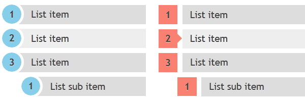

CSS Counters
CSS Counters是一个很有意思的特性，它配合 content 属性和伪元素可以实现自动编号的效果。它是CSS2.1提出的标准，主流浏览器对它的支持很好，即使是IE8都支持。利用CSS Counters可以实现“标题自动编号”、“复杂样式的有序列表”等等以前需要后端配合才能实现的样式。例如下面是由RED TEAM DESIGN提供的特殊有序列表样式：

counter-reset与counter-increment的使用
在CSS2.1中counter-reset和counter-increment两个属性负责控制Counters，然后通过content属性的counter()函数来显示。每个Counters都有一个名字，counter-reset就是用于重置Counters。它的值是一个或以上的Counter名字和对应的可选初始值。例如：
.ol1 {
counter-reset: ol 2;
}
.ol2 {
counter-reset: ol1 ol2 3;
}
.ol2 {
counter-reset: ol1 ol1 3;
}
上例中第一种情况重置Counter ol初始值2，第二种情况重置Counter ol1的初始值为0、ol2的初始值为3，第三种情况重置了ol1的初始值为3。可见对于重复重置，CSS会默认覆盖前者的初始化值。counter-increment则用于控制Counters的增长，它的值是一个或以上的Counter名字和对应的可选增量值。例如：
.li1 {
counter-increment: ol 2;
}
.li2 {
counter-increment: ol ol 1;
}
上例中第一种情况设置了Counter ol增长了2，第二种情况Counter ol增长了2，可见对于重复的设置增长值，CSS会作为是增量处理。然后在CSS的content属性中调用counter()函数即可显示出当前计数器值，如下：
li:before {
content: counter(ol) ".";
counter-increment: ol;
}
counter()函数默认显示成数字的样式，它还可以设置第二个参数来修改输出。所有list-style-type支持的样式它都支持，例如：'disc'、'circle'、'square'、和'none'等等，例子如下：
li:before {
content: counter(ol, disc) ".";
counter-increment: ol;
}
总结一下，有几个注意点要留心：
- 如果一个元素即使用了reset/increment又使用了content函数，那么先reset/increment再显示；
- 如果一个元素同时使用了reset和increment，那么先reset
- 如果一个counter被reset或increment多次，则按照顺序做覆盖或增量处理；
看到目前为止，你已经可以使用Counters来作出自己的效果了。但是这篇博文想要谈的不仅仅如此，很显然如果仅仅凭借目前这些规范还没办法实现一个嵌套的有序列表。要模仿如下例一样的ol列表嵌套，目前的功能还不够。
<ol>
<li>here’s one line from a numbered list</li>
<li>here’s another
<ol>
<li>Here's one inner ol tag</li>
<li>another line</li>
<li>Last line.</li>
</ol>
</li>
<li>第三列</li>
</ol>
嵌套Counters与作用域
为了模拟上面的效果，CSS增加了嵌套Counters与作用域的支持。如果一个元素有counter-reset的样式，则它会生成一个Counters实例，这个实例的作用域包含了它的子孙元素、它的伪元素和它的兄弟元素。举个例子：
从上面的例子可以发现，“父元素”和“其他元素”都处于作用域之外，故它们都是以1（默认值0，且增加1）开始。而兄弟元素、伪元素和子元素都按照顺序计数（after伪元素在子元素之后，before伪元素在子元素之前）。另外如果之前没有Counter实例（即没有counter-reset样式），那么counter-increment也会创建一个实例。
除了作用域之外，还有个很重要的概念“嵌套”。所谓嵌套Counters是指“自我嵌套”。如果在一个Counter实例的作用域内再次重置相同名字的Counter实例，那么新的同名Counter会嵌套在其父Counter下。看下面的例子会比较清晰：
<style>
ol {
counter-reset: ol;
}
li {
position: relative;
display: block;
padding-left: 34px;
}
li:before {
content: counter(ol) ".";
counter-increment: ol;
position: absolute;
top: 0;
left: 0;
}
</style>
<ol> <!-- {item[0]=0 重置，作用域开始 -->
<li>here’s one line from a numbered list</li><!-- item[0]++ (=1) -->
<li>here’s another <!-- item[0]++ (=2) -->
<ol> <!-- {item[1]=0 嵌套作用域开始 -->
<li>Here's one inner ol tag</li> <!-- item[1]++ (=1) -->
<li>another line</li> <!-- item[1]++ (=2) -->
</ol> <!-- } 嵌套作用域结束 -->
</li>
<li>Last line.</li> <!-- item[0]++ (=3) -->
</ol> <!-- } 作用域结束 -->
嵌套Counters配合作用域，就可以模拟默认的嵌套ol列表效果了。这里面比较容易踩坑的点是伪元素的顺序问题。如果把上例里面的before换成after，则得到的效果会不一样。更奇特的事情是即使换成了after，在IE8下效果仍旧是正确的。个人猜测是因为IE8认为after也是和before伪元素一样，先于子元素来处理。目前还没在IE9下测试过，其他主流PC浏览器都符合标准。这里有个demo展示了这种情况。
2013-06-14补充：不仅仅
counter-reset可以生成嵌套，未reset之前直接increment也会生成嵌套。这很容易导致出现意料之外地结果，所以确保increment之前一定要reset。